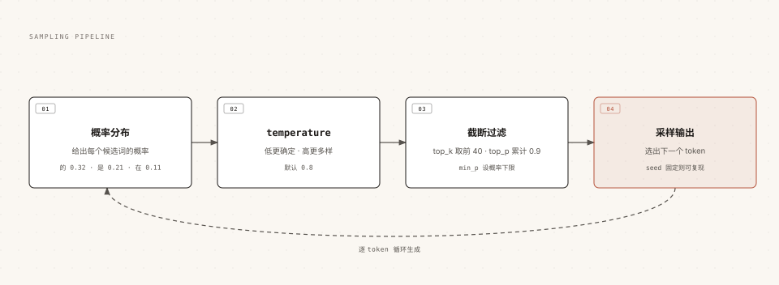

Ollama 对话与生成参数
本章节将深入对话式使用 Ollama 的细节：多种对话方式、控制模型"性格"的生成参数、上下文窗口、思考模式与多模态对话。
三种对话方式：交互、单次、管道
同一条 run 命令，用法不同，适用场景也不同。
交互模式：多轮聊天
直接运行进入对话，模型会记住本轮会话里的上下文，适合连续追问：
实例
ollama run qwen3.5
单次问答：一问一答
把问题作为参数直接跟上，得到回答后立即退出，适合一次性任务：
实例
ollama run qwen3.5 "用一句话介绍 RUNOOB 菜鸟教程"
管道输入：嵌入脚本
通过管道把文本喂给模型，方便和其他命令组合：
实例
cat README.md | ollama run qwen3.5 "总结这段内容"
此外，对话中输入三个双引号可以包裹多行文本，回车换行不会被当作提交。
生成参数：控制模型的"性格"
模型每次生成一个词（token）之前，内部都经历同一条流水线，生成参数就是在不同环节干预这条流水线。

temperature 把概率分布调陡或调平，top_k / top_p / min_p 负责把低质量的候选砍掉，最后随机采样选出下一个 token。
常用参数汇总如下（默认值来自官方文档）：
| 参数 | 默认值 | 作用 | 典型用法 |
|---|---|---|---|
| temperature | 0.8 | 越高越有创造性，越低越严谨 | 写代码、抽取信息用 0~0.3；创意写作用 1.0 左右 |
| top_k | 40 | 只从概率前 k 个候选中采样 | 调小让输出更保守 |
| top_p | 0.9 | 只从累计概率达到 p 的候选中采样 | 与 top_k 二选一微调 |
| min_p | 0.0 | 按最高概率的比例设置候选下限 | 0.05 常用于替代 top_p |
| repeat_penalty | 1.0 | 惩罚重复内容 | 1.1 缓解车轱辘话 |
| seed | 0 | 固定随机种子，保证可复现 | 测试与调试时固定结果 |
| stop | 无 | 遇到指定字符串立即停止生成 | 截断多余寒暄或固定格式 |
| num_predict | -1 | 最大生成 token 数，-1 为不限制 | 限制长回答的输出长度 |
在交互模式中用内置命令随时调整：
实例
>>> /set parameter seed 42
想让参数永久生效，把它们写进 Modelfile 做成"预调优"模型，这是下一篇 Modelfile 的核心用法。
验证 seed 效果的小实验：固定 seed 后用同一个问题问两次，输出完全一致；放开 seed，每次回答都会不同。
上下文窗口 num_ctx：模型的工作记忆
上下文窗口决定模型一次能"看见"多少内容，包括系统提示词、对话历史和你的问题，单位是 token。
窗口装不下的内容会被截断，这就是模型"聊着聊着忘了开头"的根本原因。
Ollama 会根据显存自动选择默认上下文长度：显存小于 24GiB 默认 4K，24~48GiB 默认 32K，48GiB 以上默认 256K。云模型默认跑满最大上下文。
手动调整有三种入口：
实例
/set parameter num_ctx 8192
# 方式二：启动服务时设置全局默认
OLLAMA_CONTEXT_LENGTH=8192 ollama serve
# 方式三：API 请求时按需指定（options.num_ctx，见 API 章节）
加大窗口的代价是内存占用上升，用上一章的 ollama ps 看 CONTEXT 列即可确认当前值。
把 Ollama 接入 Agent、编码工具或联网搜索场景时，官方建议上下文至少设到 64K，否则工具返回的大量内容会挤占对话空间。
思考模式：让模型先想后答
推理类模型（如 qwen3.5、deepseek-r1）支持先输出一段思考过程再给出答案，适合数学、逻辑类任务。
Ollama 默认开启思考，也提供了完整的控制开关：
实例
ollama run qwen3.5 --think "17 乘 23 等于多少？"
# 关闭思考，直接给答案
ollama run qwen3.5 --think=false "用一句话介绍 RUNOOB"
# 照常思考，但不在终端显示思考过程
ollama run qwen3.5 --hidethinking "9.9 和 9.11 谁大？"
交互模式里用 /set think 和 /set nothink 可以随时切换。
部分模型支持思考强度档位，例如 gpt-oss 只接受 low、medium、high 三档，用 --think=medium 这种形式指定。
关闭思考能明显降低响应时间，但推理类任务的正确率可能下降；编程助手等追求响应速度的场景经常选择 hidethinking——保留思考质量，又不让终端被过程刷屏。
多模态：让模型看图
qwen3.5 原生支持图像输入，命令行里把图片路径跟在问题后面即可：
实例
ollama run qwen3.5 ./screenshot.png 这张截图里是什么页面？
API 和 SDK 的用法稍复杂（base64 编码），在视觉能力章节专门演示，还能结合结构化输出做"图片转结构化数据"。
结构化输出：让回答变成可靠的 JSON
让程序解析模型回答时，最怕它每次格式都不一样。Ollama 支持强制模型按 JSON Schema 输出。
实例
"model": "qwen3.5",
"messages": [{ "role": "user", "content": "介绍 RUNOOB 菜鸟教程" }],
"format": {
"type": "object",
"properties": {
"name": { "type": "string" },
"category": { "type": "string" },
"free": { "type": "boolean" }
},
"required": ["name", "category", "free"]
},
"stream": false
}'
返回的 content 就是严格符合 schema 的 JSON 字符串，可以直接反序列化成程序对象。
Python 中配合 Pydantic 定义 schema 再校验结果，是最顺手的组合，完整实践放在模型能力章节。
两个实用细节：结构化输出时把 temperature 降到 0 更稳定；只写 format 不在提示词里说明要求时，效果可能打折，最好在提示词里也描述一遍字段含义。
多轮对话的上下文管理与常见坑
交互模式的每一轮对话，Ollama 都会把完整历史拼进上下文窗口发给模型，这带来两个必须知道的后果。
第一，会话内模型有记忆，退出（/bye）后记忆清零：重新 run 是一次全新会话，它不记得你上次说过什么。
第二，历史太长时最旧的内容先被挤出窗口，表现为模型突然"忘了"开头的约定。
对应的实用策略：
| 症状 | 原因 | 对策 |
|---|---|---|
| 重开对话后模型全忘了 | 会话上下文不跨进程保留 | 重要约定写进 Modelfile 的 SYSTEM，或用 API 自行管理消息历史 |
| 长对话后半段开始"失忆" | 上下文窗口被撑满，旧内容被截断 | 加大 num_ctx；或阶段性开新会话，只带关键结论 |
| 粘贴长文档后回答变慢变差 | 长内容挤占了上下文 | 只贴相关片段；整本文档交给 RAG 知识库方案 |
想绕开这些限制做持久记忆，就要用 API 自己维护 messages 数组，那是 API 章节的主角。
交互模式内置命令速查
对话提示符下可直接使用的内置命令如下，随时输入 /? 可查看当前版本的实际列表。
| 命令 | 作用 |
|---|---|
| /? | 显示帮助与全部可用命令 |
| /set parameter <名> <值> | 调整生成参数，如 temperature、num_ctx |
| /set system "<提示词>" | 临时更换系统提示词 |
| /set think / /set nothink | 开启 / 关闭思考模式 |
| /clear | 清空当前会话上下文，重新开始 |
| /load <模型> | 不退出终端切换到另一个模型 |
| /save <名字> | 把当前会话（含系统提示词与参数）保存成一个新模型 |
| /show info / /show parameters | 查看当前模型信息 / 当前生效的参数 |
| /bye | 退出对话 |
/save 值得单独一提：把调好参数的对话直接固化成一个新模型，相当于不写 Modelfile 的快速定制，下一章会把它和 Modelfile 方案做对比。

点我分享笔记